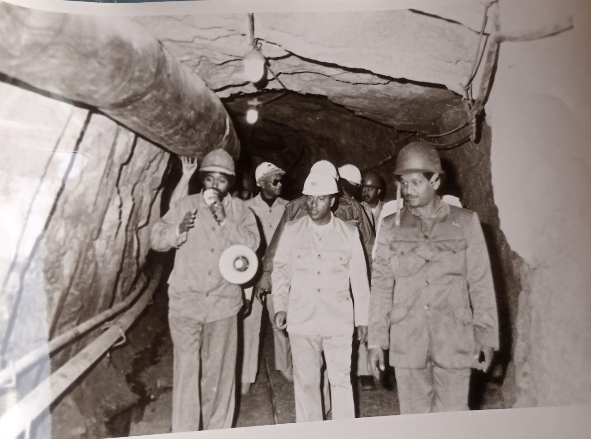

Adola Gold Development Enterprise (AGDE)

Adola Gold Development project that later became an Enterprise was established during Emperor Haile Selassie regime under the Ministry of Finance mandated to explore, develop, and produce alluvial and placer gold deposits in the Adola Region. Supported by the Swedish, Danish, Dutch, USA, and Yugoslavian exploration companies, Ethiopian geologists undertook an extensive study in the Adola region.